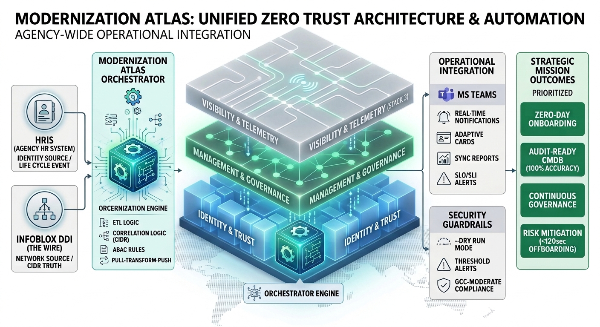

Leadership Briefing — Version 1.0
The Unified Identity-Addressing-Overlay Architecture (UIAO) establishes a modern federal enterprise built on identity, telemetry, and cloud-first routing. It replaces fragmented legacy systems with a coherent, Zero Trust-aligned architecture that treats identity as the perimeter, telemetry as the authoritative truth source, and governance as an automated workflow rather than a manual process. UIAO is not a technology refresh; it is a structural modernization of how the agency authenticates, addresses, routes, observes, and governs every digital interaction. The agency’s current environment is constrained by TIC 2.0 hairpinning, on-premises Active Directory dependencies, fragmented IPAM, inconsistent Zero Trust enforcement, and incomplete telemetry. These limitations degrade M365 performance, increase cyber risk, and create compliance gaps with TIC 3.0, FedRAMP 22, SCuBA, and NIST 800-63. UIAO directly addresses these issues by unifying identity, addressing, routing, and telemetry into a single architectural fabric. The vision is a cloud-optimized, identity-driven enterprise where every resource—from IP addresses to certificates to routing paths—is derived from or bound to identity. Telemetry becomes a real-time control input for routing and security decisions. Addressing becomes deterministic and policy-driven. Routing becomes cloud-first and performance-optimized. Governance becomes embedded and automated. Above all, modernization is guided by a simple principle: if a change degrades citizen experience, it does not ship. UIAO organizes the modernized enterprise into five coordinated control planes and seven core concepts that define how the architecture operates. These planes and concepts work together to deliver conversation-level visibility, identity-aware segmentation, accurate location inference, and automated policy enforcement. The frozen state analysis reveals a legacy environment that cannot support modern mission requirements. UIAO resolves these issues by establishing a unified, authoritative, and automated architecture that improves performance, strengthens security, reduces compliance risk, and enhances citizen-facing services. UIAO delivers measurable outcomes: reduced latency, improved M365 performance, stronger identity governance, deterministic addressing, real-time telemetry correlation, and alignment with federal modernization mandates. It provides the foundation for a resilient, scalable, and future-ready federal enterprise.
The Unified Identity-Addressing-Overlay Architecture (UIAO) is a modernization initiative designed to unify identity, addressing, routing, telemetry, and governance into a coherent, Zero Trust-aligned federal architecture. It integrates Microsoft Entra ID as the identity control plane, ICAM as the governance backbone, InfoBlox as the authoritative IPAM, Cisco SD-WAN as the routing control plane, and cloud-native telemetry and location services as the truth source for operational decisions. Together, these components form a coordinated modernization effort that replaces fragmented legacy systems with a cloud-optimized, identity-driven, telemetry-informed enterprise. The strategic goal is to transform the agency into a modern federal network where identity is the perimeter, telemetry is the truth, routing is cloud-first, and governance is automated. UIAO provides the architectural foundation needed to meet Zero Trust expectations, TIC 3.0 requirements, and FedRAMP-aligned controls while improving mission performance and citizen experience.
The agency’s current environment is constrained by legacy TIC 2.0 routing patterns that force traffic through centralized bottlenecks, degrading performance and limiting cloud adoption. Identity remains anchored in on-premises Active Directory, creating governance gaps and inconsistent enforcement across divisions. Addressing is fragmented across spreadsheets and disconnected IPAM tools, making it difficult to correlate identity, device, and network activity. Telemetry is incomplete and siloed, preventing conversation-level visibility and limiting the agency’s ability to support INR, E911, or Zero Trust enforcement. These limitations have direct mission impact. M365 performance is degraded by unnecessary hairpinning. Cyber risk increases when identity governance is inconsistent and telemetry is incomplete. Compliance gaps emerge when the agency cannot meet TIC 3.0, FedRAMP 22, or SCuBA expectations. Operational inefficiencies multiply when governance depends on manual tickets instead of automated workflows. Modernization is required to support mission readiness, cyber resilience, and citizen-facing services.
UIAO envisions a fully modernized federal network where identity, addressing, routing, and telemetry operate as a unified system. In this end state, identity becomes the root namespace for all resources, addressing becomes deterministic and policy-driven, routing becomes cloud-first and performance-optimized, and telemetry becomes a real-time control input rather than a passive reporting mechanism. The architecture is guided by several principles. Zero Trust is the default operating model, with identity as the perimeter and continuous verification as the norm. Telemetry is treated as the authoritative truth source for routing, security, and compliance decisions. Modernization proceeds incrementally, avoiding big-bang cutovers and minimizing operational disruption. All design choices are aligned with FedRAMP, TIC 3.0, and NIST 800-63 requirements. Above all, the architecture prioritizes citizen experience: if a change degrades public service, it does not ship.
The Identity Control Plane is anchored in Entra ID and reinforced by ICAM governance, Conditional Access, Privileged Identity Management, and lifecycle automation. Identity becomes the authoritative source for access, addressing, certificates, and policy.
The Network Control Plane uses Cisco SD-WAN to deliver cloud-first routing, performance-optimized paths for M365, and identity-aware segmentation. Integration with INR enables location-aware routing and emergency services readiness.
The Addressing Control Plane modernizes IPAM through InfoBlox, replacing spreadsheets with authoritative, identity-derived addressing. DNS and DHCP are unified across cloud and on-prem environments, enabling consistent policy enforcement and accurate telemetry correlation.
The Telemetry and Location Control Plane consolidates signals from M365, SD-WAN, endpoints, DNS, CDM/CLAW, and SIEM platforms. Telemetry becomes a real-time control input for routing, security, and compliance, enabling conversation-level visibility across the enterprise.
The Security and Compliance Plane aligns the architecture with TIC 3.0, Zero Trust, FedRAMP 22, NIST 800-63, and ICAM governance. Security becomes embedded in the architecture rather than bolted on, with automated enforcement replacing manual review.
Every interaction—identity, certificate, addressing, path, QoS, and telemetry—is treated as a single, correlated conversation rather than isolated events.
Identity becomes the root namespace for all resources, ensuring that every IP address, certificate, subnet, policy, and telemetry event is derived from or bound to identity.
Addressing becomes deterministic and policy-driven, replacing ad-hoc assignment with identity-derived logic that enables accurate correlation and automated governance.
Certificates and mutual TLS anchor tunnels, services, and trust relationships across the enterprise.
Telemetry becomes an active control input for routing, security, and compliance decisions rather than a passive reporting mechanism.
Governance is executed through orchestrated workflows that enforce policy consistently and reduce operational burden.
Citizen experience, accessibility, and privacy remain top-level design constraints.
The agency’s current environment reflects a series of disconnected legacy systems that cannot support modern requirements. Identity is siloed across divisions, preventing a unified identity graph. Addressing is static and manually managed, creating operational risk and preventing accurate correlation. Network security relies on perimeter firewalls that cannot enforce identity-aware segmentation. Endpoint posture is inconsistent due to mixed tooling. Applications rely on monolithic architectures and local authentication, limiting scalability and modernization. Telemetry is collected but not correlated, preventing conversation-level visibility. Governance depends on email and manual change management, slowing operations and increasing error rates. Data protection relies on manual classification and noisy DLP, limiting effectiveness.
UIAO delivers measurable improvements across performance, security, compliance, and mission readiness. Cloud-first routing and identity- driven segmentation reduce latency and improve M365 performance. Stronger identity governance and deterministic addressing enhance Zero Trust enforcement. Unified telemetry enables accurate location inference, conversation-level visibility, and real-time decision-making. The architecture aligns the agency with TIC 3.0, FedRAMP 22, and NIST 800-63 requirements, reducing compliance risk. Most importantly, the modernization improves citizen experience by delivering faster, more reliable, and more secure services.
management_and_governance: narrative: > The Management and Governance layer provides the operational orchestration that binds the five control planes into a continuously governed, auditable system. This layer is distinct from the Transport and Security tools (Cisco, Palo Alto) that move and protect traffic; instead, it focuses on ensuring that the architectural fabric remains compliant, healthy, and aligned with federal mandates over time. servicenow: role: “System of Record for Overlay Drift” narrative: > ServiceNow serves as the authoritative system of record for detecting and remediating Overlay Drift within the UIAO architecture. When the Telemetry Control Plane detects configuration deviations in the SD-WAN overlay—such as unauthorized tunnel endpoints, expired certificates, or policy mismatches against the approved baseline in program.yml— ServiceNow automatically generates a Change Request linked to the affected Configuration Item in the CMDB. The automated remediation workflow re-validates the overlay configuration, enforces corrective action, and closes the governance loop by updating the Telemetry Plane with the resolution status. This ensures that the Overlay Plane never drifts from its authorized state without detection, documentation, and remediation. fedramp_class: “Class C (Moderate)” nist_controls: - “IR-4: Incident Handling (Rev 5)” - “CA-7: Continuous Monitoring (Rev 5)” intune: role: “Identity Plane Device Trust Gatekeeper” narrative: > Microsoft Intune ensures that the Identity Control Plane only allows healthy, certified devices into the architectural fabric. Before any endpoint is granted access through the Overlay Plane, Intune validates its compliance posture: OS patch level, disk encryption status, EDR agent health, and certificate validity. This compliance signal is consumed by Entra ID Conditional Access, which enforces a device-trust gate at authentication time. Non-compliant devices are quarantined to a restricted VLAN segment managed by Cisco ISE, preventing lateral movement within the fabric. Device trust is not a one-time check but a persistent, real-time control input to the Identity Plane, ensuring continuous compliance with NIST 800-53 Rev 5 AC-19 and CM-8 requirements. fedramp_class: “Class C (Moderate)” nist_controls: - “AC-19: Access Control for Mobile Devices (Rev 5)” - “CM-8: System Component Inventory (Rev 5)”


The following section provides a direct mapping of the UIAO Modernization Architecture to critical NIST 800-53 Revision 5 security controls. The vibrant visualizations linked below serve as high-level visual proof of implementation for auditors and agency authorizing officials (AOs).
| Visual Title | Architectural Pillar | Relevant NIST Control(s) | Implementation Proof Visualization |
|---|---|---|---|
| V1: Identity-to-IP Mapping | U + A (The Gate) | IA-2 (Identification), AC-19 (Mobile), CM-8 (Inventory) | |
| V2: INR Fabric | O (The Network) | AC-4 (Flow Enforcement) |  |
| V3: 20x Governance Loop | Governance (The Hub) | CA-7 (Continuous Monitoring), IR-4 (Incident Handling) | |
| V4: Modernization Atlas | Strategy (The Journey) | Program Vision / TIC 3.0 | |
| V5: Cryptographic Trust Chain | Security (The Lock) | SC-8 (Transmission Confidentiality) |  |
End of Leadership Briefing v1.0